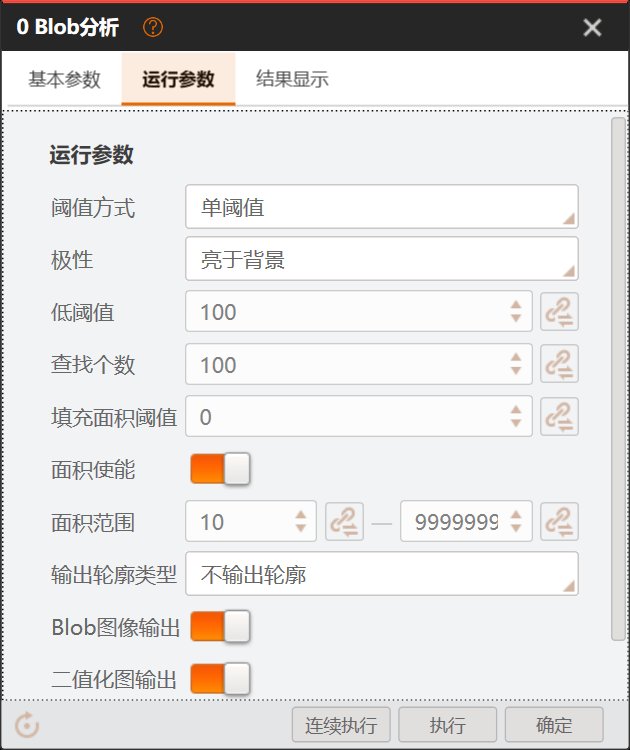
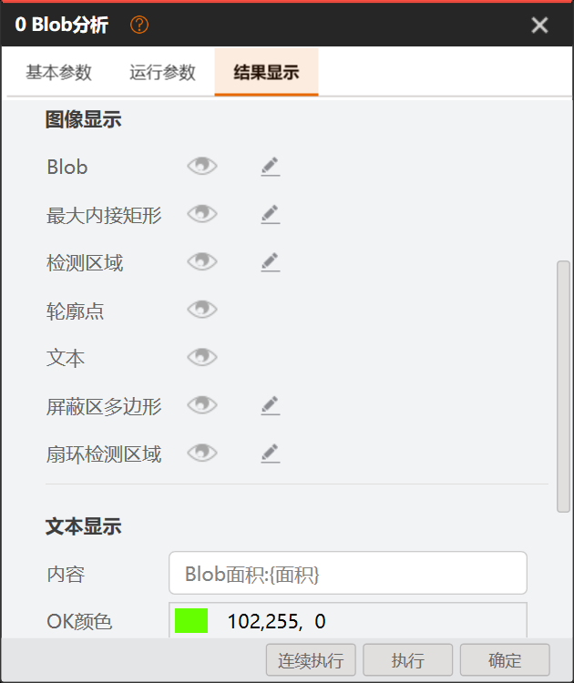
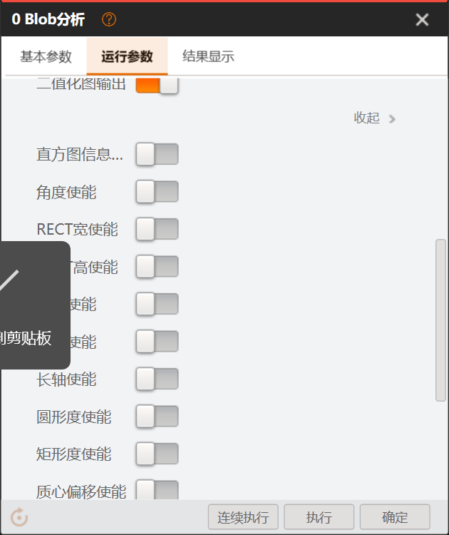

目的：按用户要求，把 Blob 分析调试窗口「运行参数」「结果显示」两个 tab 的 UI 与 VM 原厂逐项对比，差异全部列出，供圈定后统一修复（保持一致）。
证据来源（可追溯）：
docs/collaboration/evidence/VM_BLOB_UI_SOURCE_BASELINE_20261026.json（3 个 tab、分组、字段、控件类型、默认值、Trigger 显隐条件）docs/collaboration/evidence/VM_BLOB_USER_UI_SS01~08_20261026.pngdocs/07-工具逆向/decompiled/（窗口壳 ParamsConfigWithResultViewControl、参数树 AlgorithmTabRoot/Tab/Category、ParamListView、BlobFindParam.cs）docs/07-工具逆向/decompiled/Managed/BlobFind/IMVSBlobFindModuCs/BlobFindParam.cs:1955-2064tools/SunEyeVision.BlobAnalysis/Runtime/Resources/BlobParameters.xml；渲染：DeclaredSettingsView；组装：tools/SunEyeVision.BlobAnalysis/Wpf/Views/BlobUiComposition.cs改前：我方两个 tab 的字段身份大体齐全，但组织方式、控件形态、判定归属与原厂不一致，用户一眼能看出"不是原厂"。
改后：两个 tab 的分组、顺序、控件形态（范围一行双输入、眼睛+铅笔行、开关样式）、判定归属与原厂一致。
依据：VM 原厂 UI XML 基线 + 原厂截图（本文引用）。
| # | 结构性差异 | 影响 |
|---|---|---|
| S1 | 判定条件双轨：VM 的判定（LimitEnable 组）就在「结果显示」tab 的「结果判定」分组；我方在「运行参数→高级」区有一套 LimitEnable 字段（BlobParameters.xml:103-148），结果显示页又有一套自研 Judgments（输出不为空/白色像素比例/平均面积…，:150-163）——两套判定清单还不一样 | 用户在原厂位置找不到判定，且两套判定语义冲突，必须集中替换为一套 |
| S2 | 范围类参数控件形态：VM 用一行双输入（IntegerBettween/FloatBettween，如"面积范围 [10]—[9999999]"，截图 SS04）；我方拆成"面积下限/面积上限"两行独立字段 | 所有筛选/判定范围与原厂行数不一致（约 20+ 组） |
| S3 | 高级折叠机制：VM 运行参数 tab 内是 Expert 展开项（Expand 类型，展开后"收起 >"链接，截图 SS05）；我方是独立"高级" section（advanced=true） | 折叠归属与展开交互与原厂不同 |
| S4 | 图像显示分组：VM 每行 = 名称 + 眼睛（显隐）+ 铅笔（样式编辑），固定 7 项（Blob/最大内接矩形/检测区域/轮廓点/文本/屏蔽区多边形/扇环检测区域，截图 SS07）；我方由 NativeDisplayUiDraftRows + GraphicDisplays 拼装，含"基准点/运行点"（VM 无此项）等，行组织不同 | 结果显示页第一分组外观与项清单不一致 |
| 项 | VM 原厂 | 我方现状 | 状态 |
|---|---|---|---|
| 页签 | 基本参数 / 运行参数 / 结果显示（三个，截图 SS01/SS04/SS07） | 基本参数 / 运行参数 / 结果显示（同） | 一致 |
| 窗口壳 | 左参数列 + GridSplitter + 右结果区（ParamsConfigWithResultViewControl.xaml:1-22） | 调试窗口自有壳（布局待目视核对比例与分隔条） | 待目视核对 |
| 底部按钮 | 右下「连续执行 / 执行 / 确定」，左下重置图标（SS01-08 一致） | 待目视核对 | 待目视核对 |
| tab 标题来源 | 模块 UI XML Name 键 + 多语言（Tab_Run Params=运行参数，zh-cn.xaml:1306） | schema Presentation 页名，一致 | 一致 |
原厂截图：SS01（基本参数）、SS04（运行参数上段）、SS05（运行参数 Expert 展开）、SS07/SS08（结果显示）：



| VM 原厂 | 我方现状 | 状态 |
|---|---|---|
单分组「运行参数」，其中 Expert 为可展开项（Expand），展开后显示圆度/矩形度/排序/连通性/内接矩形/重叠率/超界像素等（SS05「收起 >」） | 两个 section：「运行参数」+「高级」(advanced=true，:73-149) | 不一致 S3 |
控件类型按 VM XML：Enumeration=下拉、Boolean=开关、Integer/Float=数字框（带上下箭头+右侧引用图标）、IntegerBettween/FloatBettween=一行双输入范围、Expand=折叠展开项。
| # | VM 字段 | VM 控件 | VM 默认/范围 | 我方字段 | 我方控件 | 状态 |
|---|---|---|---|---|---|---|
| 1 | ThresholdType 阈值方式 | 下拉（6 项） | 默认 0x2=单阈值 | SegmentationMode | 下拉（6 项，choices 一致） | 一致 |
| 2 | Polarity 极性 | 下拉 | 默认 0 | Type（亮于背景/暗于背景） | 下拉 | 显隐条件不同：VM 由 ThresholdType Trigger 控制（0x1/0x2 可见）；我方 visibleWhen=SegmentationMode≠DoubleThreshold。需按 VM Trigger 逐值核对 |
| 3 | LowThreshold 低阈值 | 数字 | 100，[0,255] | Threshold→LowThreshold | 数字 | 一致 |
| 4 | HightThreshold 高阈值 | 数字 | 150 | UpperThreshold→HightThreshold | 数字 | 一致（显隐=双阈值，两边同） |
| 5 | ThresholdRangArea 阈值范围（软阈值固定） | 一行双输入 | 10000 | FixedSoftLower/UpperThreshold 两行 | 两行数字 | 控件形态 S2 |
| 6 | Softness 软阈值柔和度 | 数字 | 254 | ThresholdSoftness→Softness | 数字 | 一致 |
| 7-10 | SoftLeftRatio/RightRatio/LowRatio/HighRatio | 数字×4 | 5/5/40/60 | RelativeLeft/Right/Lower/UpperRatio | 数字×4 | 一致（顺序：VM 左/右/低/高，我方同） |
| 11 | FindNum 查找个数 | 数字 | 100，[1,20000] | BlobCountLimit→FindNum | 数字 | 一致 |
| 12 | HoleMinArea 填充面积阈值 | 数字 | 0 | HoleMinArea | 数字 | 一致 |
| 13 | SelectByArea 面积使能 | 开关 | True | IsAreaFilterEnabled | 开关 | 一致 |
| 14 | RangArea 面积范围 | 一行双输入 | [1,999999999] | FilterAreaMin/Max 两行 | 两行数字 | 控件形态 S2；另 VM 默认下限=10（截图 SS04 显示 10），XML 默认 10000 待核对 |
| 15 | BlobContourType 输出轮廓类型 | 下拉 | 默认 0 | BlobContourType | 下拉（3 项同） | 默认值待核对：VM 0=？（不输出轮廓/无序），我方默认 NoneContour=不输出轮廓（截图 SS04 显示"不输出轮廓"，一致可能性大） |
| 16 | BolbImageEnable Blob图像输出 | 开关 | True | OutputBlobImage | 开关 | 一致 |
| 17 | BinaryImageEnable 二值化图像输出 | 开关 | True | OutputBinaryImage | 开关 | 一致 |
| 18 | Expert 展开项 | Expand | 收起 | 「高级」section | 折叠区 | 机制不同 S3 |
| 19 | SelectByHistInfo 直方图信息输出 | 开关 | False | SelectByHistInfo | 开关 | 一致 |
| 20 | SelectByBoxAngle 角度使能 | 开关 | False | SelectByBoxAngle | 开关 | 一致 |
| 21 | RangBoxAngle 角度范围 | 一行双输入 | [-9000,9000] | MinBoxAngle/MaxBoxAngle 两行 | 两行数字 | 控件形态 S2 |
| 22-23 | SelectByRectWidth / RangRectWidth 矩形宽 | 开关+一行双输入 | False / [1,1000000] | SelectByRectWidth + Min/MaxRectWidth | 开关+两行 | 控件形态 S2 |
| 24-25 | SelectByRectHeight / RangRectHeight 矩形高 | 开关+一行双输入 | False / [1,1000000] | 同上两行 | 开关+两行 | 控件形态 S2 |
| 26-27 | SelectByPerimeter / RangPerimeter 周长 | 开关+一行双输入 | False / 默认 1000 | Min/MaxPerimeter 两行，默认 1~999999999 | 开关+两行 | 控件形态+默认值待核对 |
| 28-29 | SelectByShortAxis / RangShortAxis 短轴 | 开关+一行双输入 | False / 默认 1000 | Min/MaxShortAxis | 开关+两行 | 控件形态 S2 |
| 30-31 | SelectByLongAxis / RangLongAxis 长轴 | 开关+一行双输入 | False | Min/MaxLongAxis | 开关+两行 | 控件形态 S2 |
| 32-33 | SelectByCircularuty / RangCircularity 圆度筛选 | 开关+FloatBettween | False / [0,1] | IsCircularityFilterEnabled + FilterCircularityMin/Max（在「高级」区） | 开关+两行 | 归属+控件形态：VM 在主列表 Expert 内；我方在高级区 |
| 34-35 | SelectByRectangularity / RangRectangularity 矩形度筛选 | 开关+FloatBettween | False / [0,1] | IsRectangularityFilterEnabled + FilterRectangularityMin/Max | 开关+两行 | 归属+控件形态 |
| 36-37 | SelectByCentraBias / RangCenterBias 质心偏移 | 开关+FloatBettween | False / 默认 10 | SelectByCentraBias + Min/MaxCenterBias | 开关+两行 | 控件形态 S2 |
| 38-39 | AxisRatioEnable / AxisRatioRange 轴比 | 开关+FloatBettween | False / [0.01,1] | AxisRatioEnable + Min/MaxAxisRatio | 开关+两行 | 控件形态 S2 |
| 40 | SortFeature 排序特征（Ranking） | 下拉（12 项：BlobFindParam.cs:78-132） | 默认 1 | SortFeature（8 项） | 下拉 | 选项清单不全：VM 12 项 vs 我方 8 项，缺项需按 BlobFindParam.cs:78-132 补齐核对 |
| 41 | SortMode 排序方式 | 下拉 | 默认 2 | SortMode（升序/降序/不排序） | 下拉 | 一致（默认值待核对：VM 2=?） |
| 42 | connectivity 连通性 | 下拉 | 默认 8连通 | Connectivity | 下拉 | 一致 |
| 43 | MaxAreaInnerRectNum 最大内接矩形数量 | 数字 | XML 默认 0；BlobFindParam.cs:2014 默认 10（两处不一致，待实机核对） | MaxAreaInnerRectNum，默认 0，[0,10] | 数字 | 默认值待核对 |
| 44 | OverlapRatio 最小重叠率 | 数字 | 0 | OverlapRatio | 数字 | 一致 |
| 45 | MaxOutPixelNumEnable 像素超界使能 | 开关 | False | MaxOutPixelNumEnable | 开关 | 一致 |
| 46 | MaxOutPixelNum 最大超界像素 | 数字 | 0 | MaxOutPixelNum | 数字 | 一致（显隐条件待核对：VM XML 无 visibleWhen 记录） |
| — | （无） | OKWhenNumIsZero + 全部判定 LimitEnable 组（:103-148） | 开关+两行×15 | 多余归属 S1：VM 里这些在结果显示 tab；我方塞在运行参数高级区 |
| VM 原厂（UI XML ResultShow tab，两个分组） | 我方现状 | 状态 |
|---|---|---|
| ①「结果判定」(Tab_Check Result)：13 组判定 = OK数量为零 + 12 组「使能开关 + 一行双输入范围」 ②「图像显示」(Tab_Image Display)：7 行 图形项（眼睛+铅笔） ③「文本显示」：内容/OK颜色/NG颜色/字号/透明度/位置X/位置Y（SS07/SS08） |
「图像显示」（NativeDisplayUiDraftRows：最大内接矩形/基准点/运行点 + 锚定行）+「文本显示」（NativeTextDisplayOptions）+「结果判定」（自研 Judgments 12 项：输出不为空/白色像素比例/Blob数量/总面积/平均面积/最大面积/最小面积/平均圆度/平均矩形度/每个Blob×3） | 不一致 |
| # | VM 判定组 | VM 控件 | 我方对应 | 状态 |
|---|---|---|---|---|
| 1 | OKWhenNumIsZero 数量为零时OK | 开关 | OKWhenNumIsZero（在运行参数高级区） | 归属错位 |
| 2 | BlobNumLimitEnable + RangBlobNumLimit | 开关+一行双输入 | BlobNumLimitEnable + Low/High 两行（高级区） | 归属+形态 |
| 3 | BlobAreaLimitEnable + RangBlobAreaLimit | 开关+FloatBettween | BlobAreaLimitEnable + Low/High | 归属+形态 |
| 4 | BlobTotalAreaLimitEnable + Range | 开关+FloatBettween | 同上模式 | 归属+形态 |
| 5 | Expand 折叠（角度/中心/宽高/周长/轴/圆度/矩形度判定收在其内） | Expand | 无折叠，平铺在高级区 | 缺折叠 |
| 6-17 | CentroidX/CentroidY/Angle/CenterX/CenterY/BoxHeight/BoxWidth/Perimeter/LongAxis/ShortAxis/Circularity/Rectangularity 各组 LimitEnable+Range | 开关+一行双输入 ×12 | 字段都有（:113-148），位置在运行参数高级区 | 归属+形态：内容齐全，位置与形态不对 |
| — | （VM 无） | 自研 Judgments：输出不为空/白色像素比例/平均面积/最大面积/最小面积/平均圆度/平均矩形度/每个Blob面积/圆度/矩形度 | 多余双轨 S1：与 VM 判定并存，语义重叠（Blob数量↔Blob个数判断等），需集中裁决去留 |
| # | VM 项（每行=名称+眼睛+铅笔） | 我方对应 | 状态 |
|---|---|---|---|
| 1 | Blob（BlobFiled） | GraphicDisplays Blob 组 | 有（行组织待对齐） |
| 2 | 最大内接矩形（BlobMaxAreaInnerRect） | NativeDisplayUiDraftRows「最大内接矩形」 | 有 |
| 3 | 检测区域（CheckZone=ROI） | GraphicDisplays Inspection（检测区域） | 有 |
| 4 | 轮廓点（MatchLocation） | VisibilityDisplays Outline（轮廓） | 名称/形态待对齐 |
| 5 | 文本（ResutlText） | VisibilityDisplays Text visible | 有 |
| 6 | 屏蔽区多边形（BlindZone） | GraphicDisplays Mask（屏蔽区域） | 有 |
| 7 | 扇环检测区域（CheckZoneAnnular） | GraphicDisplays Annulus（扇环检测区域） | 有 |
| — | （VM 无） | 基准点/运行点（BlobDisplayUi.cs:42-43，随位置修正显隐） | 多余项：VM 无此两行，需裁决（保留则记差异） |
| VM 项 | 我方对应 | 状态 |
|---|---|---|
| 内容（模板 "Blob面积:{面积}"）、OK颜色、NG颜色、字号、透明度、位置X、位置Y | NativeTextDisplayOptions(content/ok/ng/size/opacity/x/y) 全齐 | 字段齐（默认值与顺序待目视核对） |
| # | VM 原厂（截图证据） | 我方现状 | 状态 |
|---|---|---|---|
| V1 | 分组标题：大号加粗纯文本（「运行参数」「图像显示」） | DeclaredFieldsView 分组头样式待目视核对 | 待目视核对 |
| V2 | 开关：橙色 toggle（开=橙右，关=灰左，SS04/SS05） | 待目视核对 | 待目视核对 |
| V3 | 数字框：右侧上下箭头 + 引用链接图标（橙色链条，SS04） | 待目视核对 | 待目视核对 |
| V4 | 范围一行双输入：[下限]—[上限]，各带引用图标，中间破折号（SS04 面积范围） | 两行独立字段 | 不一致 S2 |
| V5 | Expert 展开区：右上「收起 >」文字链接（SS05） | 「高级」section 折叠头 | 不一致 S3 |
| V6 | 图像显示行：名称 + 眼睛图标 + 铅笔图标（SS07） | 行内控件组合待目视核对 | 待目视核对 |
| V7 | 颜色行：色块 + "102,255, 0" 文本（SS08 OK/NG颜色） | 待目视核对 | 待目视核对 |
| V8 | 底部按钮区：右下「连续执行/执行/确定」，左下重置图标，灰底通栏（SS01-08） | 待目视核对 | 待目视核对 |
| 编号 | 修复项 | 范围 | 说明 |
|---|---|---|---|
| F1 | 判定条件归位：判定组从「运行参数→高级」迁到「结果显示→结果判定」，删除自研 Judgments 双轨 | BlobParameters.xml 重排 + 结果显示页组装 | S1 治本；Judgments 中 VM 没有的项（白色像素比例/平均面积等）需用户裁决去留 |
| F2 | 范围类参数改一行双输入控件（约 20 组） | Plugin.Wpf 公共范围控件 + BlobParameters.xml（pairWith 字段合并） | S2；阈值范围已有 NativeThresholdUiDraftControls/NativeUiDraftRange 基础可复用 |
| F3 | Expert 展开机制对齐（「收起 >」交互，圆度/矩形度/排序等归入） | DeclaredFieldsView/高级 section 改造 | S3 |
| F4 | 图像显示分组行对齐：7 项固定顺序 + 眼睛/铅笔行样式；基准点/运行点裁决 | BlobDisplayUi.cs + NativeDisplayUiDraftRows | S4 |
| F5 | 排序特征选项补齐至 VM 12 项（BlobFindParam.cs:78-132） | BlobParameters.xml + 算法侧映射 | 涉及算法语义，需逐项确认 supportedSort 裁剪原因 |
| F6 | 显隐条件按 VM Trigger 逐值核对（Polarity/阈值各分支） | BlobParameters.xml visibleWhen | 以 UI XML Trigger 为唯一真源 |
| F7 | 视觉对齐 V1-V8（分组头/开关/数字框/范围行/眼睛铅笔/颜色行/底部按钮） | Plugin.Wpf 控件模板 | 需先目视核对我方现状，再逐条对齐 |
| F8 | 默认值核对：RangArea 下限（XML 10000 vs 截图 10）、BlobContourType=0、SortMode=2、MaxAreaInnerRectNum（0 vs 10）、周长/短轴范围默认 1000 | BlobParameters.xml | 两处证据冲突项列 F8，需实机或按 BlobFindParam.cs 裁决 |